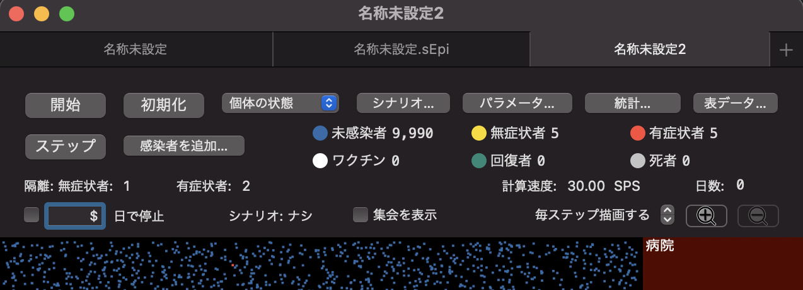

模擬感染ヘルプ
模擬感染は感染症の流行をシミュレーションするソフトウェアです．
一つの動き回る点が一人の人間を模しており，
感染した個体と感染していない個体が近づくと確率的に感染が起こります．
感染した個体は，無症状者として潜伏期間を過ごした後，発症しないまま回復するか，
発症して有症状者となり回復もしくは死亡します．
有症状者は病院に隔離される場合もあります．
また，一度感染して回復した個体，ワクチン接種済みの個体は免疫を獲得し，
感染・重症化しづらくなります．
模擬感染では，感染確率や潜伏期間の分布，ワクチンの効果などのパラメータを
細かく設定することができます．
さらに，時間経過などの条件によってパラメータを変更したり，感染者を増やしたりできる
シナリオ機能によって，「感染者が増えたら集会を制限する」といった
シミュレーションも可能です．
パラメータとシナリオを設定してシミュレーションを開始したら，
感染者数や重症度分布の変化を観察しましょう．
プロジェクトの詳細については，
ウェブページ
をご覧ください．
このヘルプは模擬感染version 1.9.2(20)を元に作成されました．
更新日：2022/6/25
シミュレーションを開始する
概要
模擬感染では，ひとつのシミュレーション・ウィンドウでひとつのシミュレーションを管理します．
シミュレーション・ウィンドウの上側は管理パネルになっており，
シミュレーションを実行したり，シナリオやパラメータを設定したり，
実行中のシミュレーションの状態を確認したりすることができます．
ウィンドウの下側は，シミュレーション結果をアニメーションで表示するフィールドです．
ひとつの動き回る点がひとりの人間を模しており，
発症して隔離されるとフィールド内右上の「病院」領域へ，
死亡すると右下の「墓地」領域へ移動します．
シミュレーションを実行するには，管理パネルの「開始」ボタンをクリックします．
一度開始すると「開始」ボタンは「停止」ボタンに変化し，
「停止」ボタンをクリックするとシミュレーションを一時停止することができます．
シミュレーションを開始したとき，
管理パネル左下の「...日で停止」がチェックされていると，
指定された日数までシミュレーションを実行し自動的に停止します．
また，「ステップ」ボタンをクリックして，シミュレーションを１ステップずつ実行することも可能です．
「初期化」ボタンをクリックすると，「シナリオ」と「パラメータ」が適用され，
アニメーション・フィールドの個体の位置と状態が初期値に戻ります．
ただし，「パラメータ」の「世界」分類以外のパラメータについては，
シミュレーション実行中に変更を適用することができます．
シミュレーション・ウィンドウを作成/保存する
シミュレーション・ウィンドウを新規作成するには
メニューバーの「ファイル」から「新規」を選択します．
シミュレーション・ウィンドウはいくつでも作成できます．
タブ形式で表示している場合は，タブバーの「+」から
新規作成することも可能です．
シミュレーション・ウィンドウを上書き保存するにはメニューバーの「ファイル」から
「保存」，ファイル名を指定して保存するには「別名で保存」を選択します．
シミュレーション・ウィンドウを保存すると，「.sEpi」ファイルが作成されます．
「.sEpi」ファイルを開くには「ファイル」から「開く...」を選択してください．
「.sEpi」を開く，もしくは「ファイル」メニューの「保存した状態に戻す」を選択すると，
最後に保存した時点のシナリオ，パラメータの設定が適用されます．
なお，シナリオ，パラメータの設定は個別に保存することもできます．
シミュレーション・ウィンドウをタブで開く
メニューバーの「ウィンドウ」メニューから「タブバーを表示」を選択すると，
シミュレーション・ウィンドウをタブ形式で表示することができます．
ウィンドウ上部に現在そのウィンドウが表示しているタブの名称，
その下にタブグループが表示されます．
タブグループの右端の「＋」ボタンでタブを追加することができます．
タブを画面の空いているところにドラッグ＆ドロップすると，
ウィンドウとして独立させることができます．
別ウィンドウのタブをタブグループに移動するには，
タブを統合したいタブグループにドラッグ＆ドロップします．
また，全てのウィンドウを一つのウィンドウにまとめてタブ表示するには，
「ウィンドウ」メニューから，「全てのウィンドウを結合」を選択します．

感染者を追加する
シミュレーション・ウィンドウの「感染者を追加...」ボタンから，
シミュレーション実行中に未感染者の中に感染を起こすことができます．
「感染者を追加...」ボタンをクリックすると，感染者追加ダイアログが開きます．
「変異株」では，
「パラメータ」パネルの「検査とワクチン」の
「変異株とワクチン...」から登録した変異株のリストから，
どのウイルス変異株の感染者を増やすのか選択します．
「配置場所」では，アニメーション・フィールドの左側の領域の
どのあたりに感染者を追加するか選択することができます．
「ランダムに分散」を選択すると，
領域の色々な場所にバラバラに感染者が現れます．
「中央クラスタ」を選択すると，中央にまとまって感染者が現れます．
「任意位置クラスタ」を選択すると，領域のどこかにまとまって感染者が現れます．
「追加」ボタンをクリックすると，「配置場所」で選択した位置の「追加数」で指定した人数の未感染者が
「変異株」で選択したウイルスに感染します．
シミュレーション結果を確認する
概要
シミュレーションの実行結果は，
シミュレーション・ウィンドウ，パラメータ・ウィンドウ，統計ウィンドウ，
表データ・ウィンドウで
リアルタイムに確認することができます．
シミュレーション・ウィンドウでは，個体の状態ごとの現在数，
病院に隔離されている個体の現在数，
一秒あたり何ステップ計算しているかを示す計算速度，
シミュレーション中の経過日数，
適用中のシナリオのどの部分を実行しているかを示すシナリオ番号
を確認することができます．
また，アニメーション・フィールドでは，
人間を模した点が状態によって色を変えながら動き回り
シミュレーションの結果を視覚化します．
パラメータ・ウィンドウは，シミュレーション・ウィンドウの
「パラメータ...」ボタンをクリックすると開きます．
このウィンドウでは，「初期化」を行った時のパラメータの初期値，
シミュレーション中の変化を反映した現在値を確認できます．
統計ウィンドウは，シミュレーション・ウィンドウの
「統計...」ボタンをクリックすると開きます．
このウィンドウでは，さまざまな統計情報のグラフを確認できます．
アニメーションの表示を変更する
シミュレーション・ウィンドウの「開始」「初期化」ボタンの右側のリストから
アニメーション・フィールドの個体の色が示す情報を変更することができます．
-
個体の状態
-
個体の色によって，
未感染，無症状感染，有症状感染，ワクチン接種済み，感染後回復，死亡
のどの状態であるかを示します．
環境設定
からどの状態を何色で表すのか変更することができます．
デフォルトでは，
未感染者は
青,
無症状者は
黄色,
有症状者は
赤,
ワクチン接種者は白，
回復者は
緑,
死者は
灰色
で表されます．
-
年齢
-
個体の年齢によって色が変わります．
-
ワクチン態度
-
ワクチン接種に賛成か反対かによって色が変わります．
-
ワクチンとウイルス
-
接種したワクチンの種類，感染した変異株の種類が色によって区別されます．
また，「集会を表示」にチェックを入れると，集会を行っている場所が円形で強調表示されます．
人が集まりやすい集会ほど大きな円で表示されます．
ひとつひとつの個体をよく見たい場合は，シミュレーション・ウィンドウの右端にある
拡大鏡の+ボタンで拡大できます．
拡大しているときは，アニメーション・フィールドをドラッグして表示領域を変更することができます．
元に戻すには，拡大鏡の-ボタンで縮小します．
アニメーションのフレームを描画する頻度を調節することも可能です．
拡大鏡ボタンの左の「毎ステップ描画する」もしくは「◯ステップ毎に描画する」の隣にある
上下の矢印をクリックして描画する頻度を変更します．
計算速度が遅い場合は，描画するまでのステップ数を大きくすると
改善することがあります．
可視化されたデータを見る
シミュレーション・ウィンドウの「統計...」ボタンを押すと統計ウィンドウが開きます．
統計ウィンドウでは，リアルタイムに更新されていく様々なデータのグラフを確認することができます．
表示するデータを変更するには，統計ウィンドウの左上にあるリストから表示する項目を選択します．
-
全体構成変化
-
未感染者，無症状者，有症状者，ワクチン接種者，回復者．死者
の構成の変化を確認できます．
縦軸がそれぞれの割合，横軸がシミュレーション上の経過日数の積み上げグラフです．
それぞれの色は環境設定に依存しますが，デフォルトでは，
未感染者は
青,
無症状者は
黄色,
有症状者は
赤,
ワクチン接種者は白，
回復者は
緑,
死者は
灰色
で表されます．
-
指標別変化
-
選択した指標の折線グラフを確認できます．
縦軸は人数，横軸はシミュレーション上の経過日数を表します．
ウィンドウ左側の「最大人数[人数]（人口に対する人数の割合）」は
表示されているデータの最大人数を示しています．
表示する指標を変更するには，「指標選択パネルを開く」ボタンをクリックし，
指標選択パネルのチェックボックスを操作します．
「日毎の増加分」がチェックされている場合は，選択した指標の増加分が，
チェックが外されている場合は現在数がグラフ化されます．
-
重症度推移
-
隔離者を重症度によって段階分けし，それぞれの人数を縦軸にとった積み上げグラフです．
横軸はシミュレーション上の経過日数を表します．
青いほど軽症で赤いほど重症です．
重症度は，発症からその時点までの日数/発症から死亡までの日数で求められます．
「発症から死亡までの日数」とは，あらかじめ各個体に割り振られているもので，
発症してからこの日数以内に快復しない場合死亡します．
-
変異ウイルス
-
隔離者のうち，感染している変異ウイルスごとの人数を縦軸に取った積み上げグラフです．
横軸はシミュレーション上の経過日数を表します．
-
期間分布
-
発症者のうち感染してから発症するまでの期間，発症してから快復するまでの期間，
発症してから死亡するまでの期間のヒストグラムです．
-
伝染数分布
-
一人の感染者が他の人に感染させた人数のヒストグラムです．
表データを見る
シミュレーション・ウィンドウの「表データ...」ボタンをクリックすると
表データ・ウィンドウが開きます．
表データウィンドウでは，さまざまな数値データを表形式で確認できます．
表データ・ウィンドウのデータは自動で更新されません．
表示されているデータを更新するには，ウィンドウ右上にある
「再表示」ボタンをクリックします．
「コピー」ボタンをクリックすると，表示されているデータがスペース区切りのテキストデータとして
クリップボードにコピーされます．
表示するデータを変更するには，左端のリストから表示する項目を選択します．
-
時間変動
-
各項目のその時点での現在数の一覧です．データを表示する最小間隔は1ステップ毎です．
-
日毎増加分
-
各項目の日毎の増加分の一覧です．データを表示する最小間隔は1日毎です．
-
検査
-
日毎の検査数とその内訳，その日に判明した検査結果の一覧です．
データを表示する最小間隔は１日ごとです．
-
期間の分布
-
日数を階級値とした度数分布表です．
パラメータを調整する
概要
シミュレーション・ウィンドウの「パラメータ...」ボタンをクリックすると
パラメータ・ウィンドウが開きます．
パラメータは「世界」「移動」「発症機序」「対策」「検査とワクチン」に
分類されており，タブによって表示するパラメータ群を切り替えることができます．
パラメータ・ウィンドウでは，シミュレーションに利用するパラメータの初期値を
設定できるほか，シミュレーション中に現在のパラメータ値を確認したり，
パラメータの値を変更したりすることができます．
それぞれのパラメータの詳細については，
パラメータの詳細を理解する
を確認してください．
初期値と現在値
「世界」以外のタブでは，左下に「初期値」「現在値」の
ラジオボタンがあります．
これは，シミュレーション・ウィンドウの
「初期化」ボタンをクリックした時に設定されるパラメータ値を
表示するか，
シナリオ等によって初期値から変更された可能性のある
シミュレーションで現在使われているパラメータ値を表示するか
切り替えるためのものです．
「現在値」を表示しているときにパラメータ値を変更すると，
現在実行しているシミュレーションにそのまま反映されます．
「初期値」を表示しているときにパラメータ値を変更すると，
現在実行しているシミュレーションには反映されず，
シミュレーション・ウィンドウの「初期化」ボタンをクリックした時に
適用されます．
「世界」分類のパラメータはシミュレーションの初期化時に適用した後
パラメータ値を変更することができないため，タブに初期値/現在値の表示切り替えボタンが
なく，常に初期値が表示されています．
既定値と出荷既定値
パラメータのタブごとにパラメータ値を既定値に戻すことができます．
既定値に戻すには，パラメータ・タブの下側にある「出荷既定値」をクリックします．
ユーザ独自の既定値を設定し，戻すことも可能です．
ユーザ独自の既定値を設定するには，パラメータ値を変更した後，
「既定値として保存」をクリックします．
「既定値に戻す」をクリックすると，パラメータ値がユーザ既定値に
変更されます．
ユーザ既定値の情報は「既定値設定を消去」をクリックすると消去できます．
ユーザ既定値を更新したい場合は，「既定値設定を消去」してから保存するか，
単に「既定値として保存」して既存の既定値設定を上書きしてください．
パラメータの保存と読み込み
パラメータ・ウィンドウ右下の「保存...」ボタンをクリックすると
パラメータの情報をsEpPファイルに保存することができます．
パラメータ・ウィンドウにsEpPファイルの内容を反映するには「読み込む」ボタンをクリックし，
ファイルを選択します．
パラメータ・ウィンドウの「変異ウイルスとワクチン」，「定期集会」以外の内容は，
パラメータ名をキーとしたJSON形式のファイルで保存/読み込みすることも可能です．
パラメータ名の一覧は
技術文書の「パラメータ名と型」から確認できます．
パラメータの情報をJSON形式のファイルに保存するには，
「保存...」ボタンをクリックし，保存するファイル名の拡張子を
「.sEpP」から「.json」に変更してから保存します．
JSONファイルを読み込むには，「読み込む」ボタンをクリックし，
JSON形式のファイルを選択します．
また，「コピー」ボタンをクリックすると，パラメータのJSON形式のデータが
クリップボードにコピーされます．
クリップボードにJSONデータがコピーされた状態で「ペースト」すると，
クリップボードのデータがパラメータ・ウィンドウに反映されます．
シナリオを設定する
概要
模擬感染では，「シナリオ」機能を使うことで
シミュレーションの実行中にパラメータの値を変更することができます．
シナリオを設定するには「シナリオ...」ボタンをクリックし，
シナリオ・ウィンドウを開きます．
シナリオには，
-
パラメータを変更する行
-
感染者を追加する行
-
条件によってシナリオの実行を制御する行
の３種類の行が含まれており，上から順番に実行されます．
シナリオ・ウィンドウの「+パラメータ」「+条件」「+感染者追加」ボタンを
クリックしてシナリオの行を追加できます．
シナリオの順番を入れ替えるには，行を選択して「↓」もしくは「↑」のボタンをクリックします．
また，「初期化」のボタンをクリックすると全ての行を削除します．
シナリオを変更したら，シナリオ・ウィンドウの右下の「適用」ボタンをクリックします．
シナリオを適用すると，シミュレーション・ウィンドウで「初期化」ボタンを
クリックした時，設定したシナリオがシミュレーションに反映されるようになります．
シナリオの保存と読み込み
シナリオ・ウィンドウ左下の「保存...」ボタンをクリックすると
パラメータの情報をsEpSファイルに保存することができます．
シナリオ・ウィンドウにsEpSファイルの内容を反映するには「読み込む」ボタンをクリックし，
ファイルを選択します．
シナリオ・ウィンドウの内容は
JSON形式のファイルで保存/読み込みすることも可能です．
JSON形式でのシナリオの表現方法については
技術文書の「シナリオのデータ表現」を参照してください．
JSON形式のファイルに保存するには，
「保存...」ボタンをクリックし，保存するファイル名の拡張子を
「.sEpS」から「.json」に変更してから保存します．
JSONファイルを読み込むには，「読み込む」ボタンをクリックし，
JSON形式のファイルを選択します．
また，「コピー」ボタンをクリックすると，シナリオのJSON形式のデータが
クリップボードにコピーされます．
クリップボードにJSONデータがコピーされた状態で「ペースト」すると，
クリップボードのデータがシナリオ・ウィンドウに反映されます．
シナリオの中でパラメータの値を変更する
シナリオにパラメータの値を変更する行を追加するには，
シナリオ・ウィンドウの「+パラメータ」ボタンをクリックします．
パラメータ行では，どのパラメータを現在の値から何日かけて
どんな値に変化させるか，を指定することができます．
パラメータ行の左端のリストから値を変化させるパラメータの分類を選択すると，
選択した分類に応じて右隣のパラメータ名のリストの中身が変化します．
変更したいパラメータ名を選択し，「←」の右側の入力ボックスに
そのパラメータが最終的にとる値，「遷移」の隣の入力ボックスに
現在の値から最終的にとる値まで何日かけて変化させるかを入力します．
変更したいパラメータの分類として「ワクチン」を選択すると左端にリストが追加されます．
変更したいパラメータとして「ワクチン」の「最終接種率」以外のパラメータを選択した場合，
追加されたリストの中身は，パラメータ・ウィンドウの「検査とワクチン」の「変異株とワクチン...」
で設定されているワクチン名の一覧になっています．
追加されたリストからどのワクチンのパラメータを変更するのか選択します．
「最終接種率」を選択した場合，追加されたリストは年齢層のリストになっています．
どの年齢層の最終接種率を変更するのか選択します．
作成したパラメータ行を削除するには，行の右にある「-」マークをクリックします．
シナリオの中で感染者を追加する
シナリオに感染者追加の行を追加するには，
シナリオ・ウィンドウの「+感染者追加」ボタンをクリックします．
感染者追加行では，どの変異株に感染した感染者をどこに何人追加するのか
指定することができます．
感染者追加行の始めの入力ボックスに何人追加するのかを指定します．
その隣のリストは，パラメータ・ウィンドウの「検査とワクチン」の「変異株とワクチン...」
で設定した変異株名の一覧になっています．
一覧からどの変異株の感染者を追加するのか選択します．
感染者追加行の右端のリストでは，感染者をどこにどのように追加するのか選択します．
「散在」を選択した場合は，ランダムな位置にバラバラに感染者が追加されます．
「中央に集団」を選択した場合は，中央付近にまとまって感染者が追加されます．
「任意位置に集団」を選択した場合は，ランダムな位置にまとまって感染者が追加されます．
作成した感染者追加行を削除するには，行の右にある「-」マークをクリックします．
シナリオの実行を制御する
シナリオ・ウィンドウの「+条件」ボタンをクリックすると，
条件によってシナリオの実行を制御する，条件行を追加できます．
条件行には条件を「満たすまで実行」するものと
条件を「満たすなら」指定したシナリオの行に移動するものの
２種類があります．
- 「満たすまで実行」
-
「満たすまで実行」を選択すると，シミュレータは指定された条件を満たすまで
現在のシナリオ行を実行し続けます．
言い換えると，条件を満たすまで次のシナリオ行に進まずに待機します．
「満たすまで実行」では，「満たすまで実行」か「満たすまで」かを選ぶリストの
隣の入力ボックスにテキストを入力して，ラベルを付けることができます．
ラベルはシミュレーションやシナリオの実行に影響を与えません．
ラベルのついたシナリオ行が実行されると，
統計ウィンドウで確認できるグラフに
ラベル名が表示され，いつどのシナリオ行が実行されたのか分かりやすくなります．
- 「満たすなら」
-
「満たすなら」を選択すると，
条件を満たしていれば指定した番号のシナリオ行に移動します．
条件を満たしていなければ次のシナリオ行を実行します．
条件を指定するには，シナリオ制御行の「+P」ボタンをクリックします．
パラメータの詳細を理解する